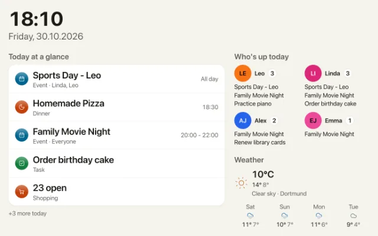
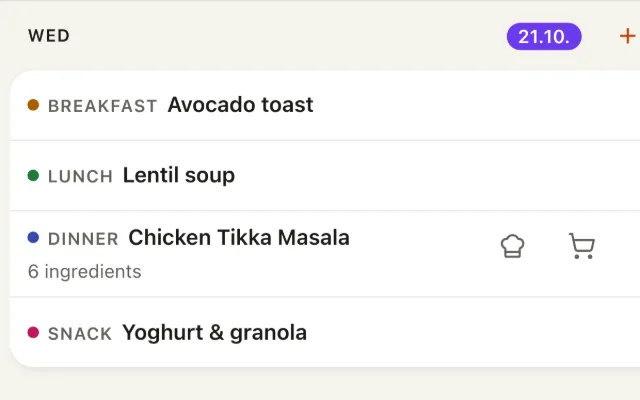
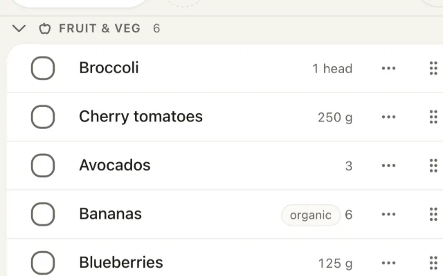
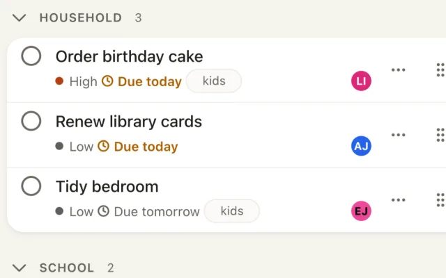
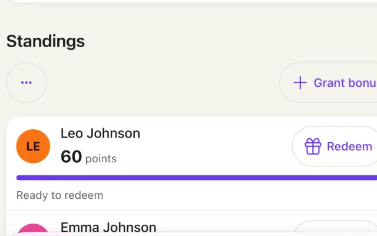
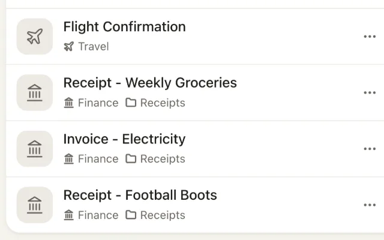
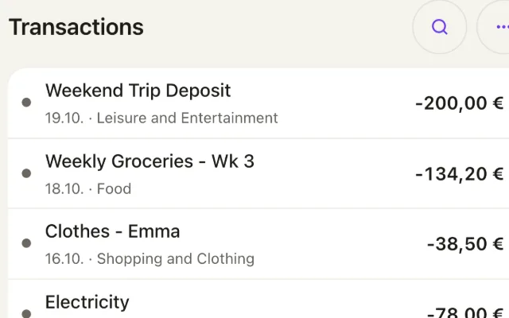
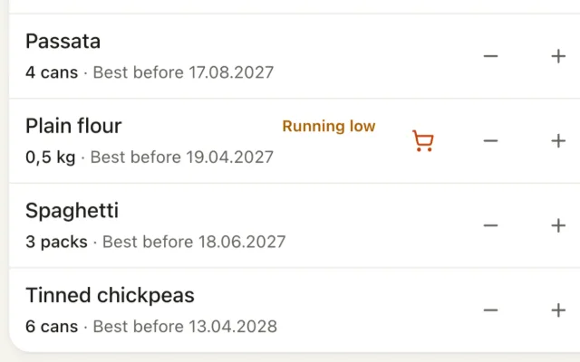
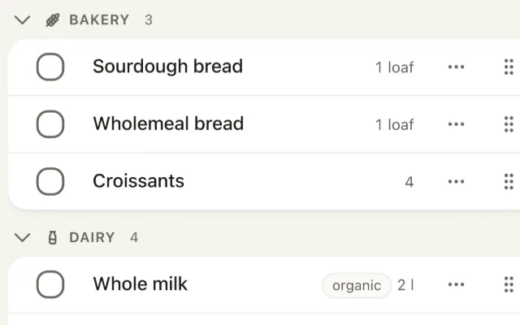

One home instead of many subscriptions.
Calendar, tasks, meals, shopping and money in one app whose parts work together. It runs on your own computer at home - for a family, a couple, or just you.

One person sets it up. Everyone else gets an invite link and the app on their phone.
Six apps, and one person who remembers it all.
Each with its own account and its own copy of your life on someone else’s server, and none knows what the others know. So someone at home keeps the connections in their head. Yuvomi takes that on, and every line below works today.
- a to-do & task appis replaced byTasks
- a family calendar appis replaced byCalendar
- a meal planner & recipe appis replaced byMeals & Recipes
- a grocery-list appis replaced byShopping
- a budgeting & cost-splitting appis replaced byBudget
- a document manageris replaced byDocuments
There is a calmer way: one home, and it belongs to you.
Everything in it works together.
Separate apps cannot do this. What happens in one place shows up where it is needed next, with no retyping and nothing to remember. And one search finds it, in any module.
-

Meal plan for the week
Ingredients on the shopping listOne import sends every ingredient from the week's plan to the shared list, sorted by aisle, with the next seven days pre-selected. Nobody transcribes a recipe into a notes app again.
-

A chore gets ticked off
Points land on your kid's balanceAny task can carry points. They go to whoever did it - the assignee, or the person picked when it is ticked off - and buy rewards from a catalog you control.
-

A receipt gets filed
It’s attached to the expenseAttach it to the budget entry from the documents you already keep, or upload it on the spot. Filed once, findable from both sides.
-

The last jar goes out of the pantry
One tap puts it on the shopping listPantry keeps amounts and best-before dates, and reminds you before something expires. What runs low or runs out goes onto the shared list from its row, and buying it books it back into stock. Household of five or household of one, the loop is the same.
From breakfast to bedtime, one plan.
Real screens, no demo account. In the morning who has to be where, at midday what is on the table, in the evening who did what.
Who has to be where, before anyone asks. Google, iCloud and Nextcloud calendars in one view, synced both ways, and the whole day on a single timeline.
What is for dinner is already decided. The whole week from breakfast to snacks, dragged into place and there for everyone at home.
Chores done, points earned, and everyone sees what they are saving for. A parent approves each request, and the history shows who did what.
On the kitchen wall, in every pocket, for every age.
Everyone at home gets their own account from a link and the app on their phone. Only the person who sets it up ever sees a server.
-
The tablet on the kitchen wall
Wall mode shows today’s plan and who is up, readable across the room; when nobody is looking it can show your photos from Immich, and at night it dims. The tablet has an account of its own: tap a task, pick who did it, and the points go to them.
-
The app on every phone
It goes on the home screen straight from the browser, no app store. Reminders arrive as notifications even while it is closed (your server needs HTTPS for that), and the last shopping list you opened stays readable without signal.
-
An invite, and just the right access
An admin sends a link and the new member picks their own password; a child without a phone gets an account created directly. Per family role, each module is full, read only or not at all, and what is private stays private, down to a single note.
Invited by your family?
No server and no terminal for you - only the link.
- Open the invite link your admin sent you. It works for seven days; after that, ask for a new one.
- Choose a username, unless the invite already set one, and your own password. If your household signs in with single sign-on, there is no password to pick.
- Sign in, then put Yuvomi on your home screen: tap Install when the app offers it, or on iPhone and iPad open the Share menu and choose Add to Home Screen.
All of it, and only what you use.
Grouped the way the app groups them. Whatever your household does not need, an admin switches off for everyone, and it disappears from the menu. Missing something? Extension modules can be added.
Plan
Everyone knows what needs doing.
Shared tasks with deadlines, priorities, subtasks, tags and recurring schedules, assignable to several family members at once.
- Kanban board with one-tap status changes
- Several people on one task, visible at a glance
- Optional two-way sync with CalDAV reminder lists
- Lock a task so only its creator and admins can change it
- A history of what was completed, by day and by member
Calendar
Two-way sync with Google and CalDAV, one-way push to Outlook.com via Microsoft Graph, public ICS subscriptions, recurring events, holiday overlays and per-event visibility.
Rewards
Points on tasks go to whoever did it, with a configurable default for new tasks, a parent-approved catalog, an auditable ledger and pocket money per child.
Notes
Colored Markdown sticky notes for recipes, memos and quick reminders, personal or for the household, with checklists you tick off with a tap. A note can be private, or locked so only its author can change it.
Schedule
Rotating shifts and fixed weekly timetables, with changes for single days and an explicit day off. The calendar shows them as a layer of their own, so changing a pattern never leaves old appointments behind. Off by default; households turn it on.
Household
Dinner sorted before anyone asks.
A weekly drag-and-drop planner with repeating meals and ingredient lists that export straight to the shopping list in one click.
- Drag-and-drop weekly planner with repeats
- Reusable recipes you can scale & duplicate
- A shared shopping list, sorted by aisle and updating live
Recipes
Create, duplicate and scale reusable recipes, then pre-fill meal slots or send the ingredients to a shopping list. A self-hosted Mealie or Tandoor instance can be mirrored read-only.
Shopping
Collaborative lists grouped by aisle and ordered to match your shop, with swipe gestures and an import from the meal plan.
Pantry
What is actually in the house: amount, storage location and best-before date, with expiry and low-stock filters, and a two-way handover with the shopping list.
Housekeeping
Manage household staff: schedules, check-in/out, daily or hourly billing, chores and supplies.
Waste collection
Weekly, monthly or nth-weekday pickup rhythms, or a municipal ICS calendar imported once or subscribed by URL, with per-occurrence moves and skips, personal reminders, a Dashboard widget and a switchable Calendar layer. Off by default; households turn it on.
Documents
Family files with previews, folders, visibility controls and bulk actions. Storage on a local folder, WebDAV or Google Drive; Paperless-ngx and Papra optional.
Inventory
What you own: brand, model, serial number, storage location, purchase price, warranty and condition, with linked receipts and bookings. Off by default; households turn it on.
People
Health that stays in the family.
Vitals, medications, preventive care, lab results, activity, cycles, fasting and nutrition, tracked per member, private by default, and stored only on your server.
- Cycle ring with period and fertile-window predictions
- Medication reminders with refill alerts
- Per-entry visibility: private or shared
- Parents can record a child’s fever and medication
Contacts
A shared contact directory that can bring in your contacts over CardDAV, with vCard import and export.
Birthdays
Birthday tracker with optional name days, automatic annual calendar events, age display and custom reminders.
Finance
No surprise at the end of the month.
Track who spent what, split shared costs automatically, and see exactly where the money goes.
- 61 currencies, recurring entries, weekly/monthly/yearly statistics, monthly budgets & savings goals
- Subscription tracker with renewals, budgets & alerts
- Shared costs for household, trips and events, with automatic debt simplification
- Share an entry's amount while its title and category stay private
Settings
Family
Member profiles with roles, photos and contact details, kept in sync with Contacts and Birthdays.
Reminders
Reminders on tasks, events, shifts, subscription renewals, warranties, best-before dates and waste pickups, with an in-app badge, opt-in push notifications and household Gotify, ntfy, webhook or email channels.
API tokens
Access tokens for scripts and tools such as Home Assistant, against a documented OpenAPI 3.1 spec, plus an MCP endpoint at /mcp that lets a client like Claude Desktop drive the API in plain language.
Backup
Scheduled backups with optional WebDAV upload (Nextcloud, ownCloud, Hetzner, etc.). Every restore saves the current state first, and a backup from another installation restores in the browser, no shell needed.
Not a photo library, password manager or media server - what you already run can stay. Calendars sync both ways over CalDAV, contacts come in over CardDAV, documents can live on WebDAV or Google Drive, and the API and its MCP endpoint connect the rest.
It belongs to you, not to us.
No account with us, no subscription, no ads and no premium tier that locks half the app away. It runs on a computer in your home and keeps running there.
Latest release v2.83.029 October 2026What changed
- Free, and it stays that way.
- Open source under the MIT license. Every module is included, nothing waits behind a paywall, and anyone can read, keep and run the code.
- On your own disk, encrypted if you want.
- Everything lives in one database file on your own server, health records and budget included. Switch on encryption (AES-256) and nobody can read that file without your key; the guided installer creates the key for you.
- One call out, and you can check it.
- Out of the box, one update check against the GitHub releases API. Block it and nothing breaks. Everything else reaches out only when you use or switch on a feature that needs it. What the site itself storesThe update check in the source
Which features
Opening the calendar settings loads the list of holiday countries from openholidaysapi.org, and finding a logo for a subscription looks up the service’s website. If the operator turns them on, a profile picture from Gravatar sends a hash of your email address there, and an admin can install extension modules from GitHub. Weather, public holidays, exchange rates, calendar and contact sync, recipe mirrors, Immich, Paperless or Papra, push and notification channels, cloud storage and backup connect once you switch them on. - Maintained in the open, and listed by others.
- TrueNAS, Umbrel and Unraid carry it in their app catalogs, and every change is written down in the public changelog.
The questions worth asking first
- What if this project stops?
-
Nothing changes on your machine.
The full answer
It is MIT-licensed and runs on your own hardware, there is no server of ours anywhere in the path, and on its own it only asks GitHub whether a newer version exists. The copy you installed keeps running exactly as it does today, with or without us.
- What if I want my data somewhere else?
-
Copying one file is the whole export.
The full answer
Everything lives in a single SQLite file on your own disk, unless you moved documents to a folder, WebDAV or Google Drive; those files need their own backup. Scheduled backups write a restorable archive on top of that, and the documented API plus the MCP endpoint pull anything out in whatever shape you need.
- What if I lose the encryption key?
-
Then the database is gone, and we cannot help you.
The full answer
That is the honest answer: the encryption (SQLCipher, AES-256) has no recovery path and no back door, which is the whole point. Keep the key the way you keep the ones that matter, in a password manager or on paper somewhere safe. Encryption is optional; if you would rather not carry that risk, leave it off and the file stays readable.
- How safe is access from outside?
-
Every account can add a second factor, and an admin can require it for the whole household.
The full answer
Sign-in then also asks for a six-digit code from an authenticator app on the phone (TOTP), with recovery codes as the way back. New members join through an invite link and pick their own password. If you already run a single sign-on service (OIDC, such as Authentik or Keycloak), password login can be switched off for the household, and a lost phone is signed out from any of your other devices.
- Is there an app in the store?
-
No, and you do not need one.
The full answer
Yuvomi is a web app that installs from the browser: open it on the phone, choose “Add to Home Screen” (on an iPhone from the share menu), and it starts full screen like any other app. Reminders arrive as push notifications even while it is closed; for that your server needs HTTPS. Updates come with the server, so every phone is on the same version without a store review in between.
- Does it work without signal?
-
For reading, yes.
The full answer
Calendar, tasks, the shopping list, contacts and the overview keep the state your phone last loaded, so the list stays readable in the supermarket basement, with a strip at the top saying it is the saved state. Changes need a connection again: ticking something off while offline is refused with a note instead of being lost silently. A device signed out remotely loses offline access once it is back online, at the latest when its session expires. A wall tablet keeps showing its lists for up to 72 hours without contact with your server, also after a restart.
- Do I still need my CalDAV or Nextcloud server?
-
Only if you want to keep using it.
The full answer
Yuvomi keeps everything in its own database and runs fine on its own. It is not a CalDAV server itself, though: it syncs with yours, events both ways, tasks and shopping items through CalDAV reminders, and contacts it fetches over CardDAV. So if you want to keep editing in Apple Calendar or Thunderbird, keep the server and let Yuvomi sync with it; to just see the family calendar elsewhere, its ICS feed is enough. Nextcloud also works as WebDAV storage for documents and backups.
- Does it work with Home Assistant?
-
Yes, through open interfaces rather than a plugin.
The full answer
Calendar, waste collection and birthdays come as ICS feeds that Home Assistant’s Remote Calendar reads. Reminders can go to a webhook, and everything else is in the documented REST API, with tokens you can limit to single modules, read or write. There is no official integration with entities of its own.
Runs on your hardware
Yuvomi comes as a Docker container: one packaged program that runs the same on any home server or NAS.
Setting it up takes one person, once. Everyone else just opens their invite link.
Docker / Podman
Pre-built image, one compose command - or rootless with Podman on RHEL, Fedora and CentOS Stream.
Or with one click from your NAS app store
More ways to install
On Proxmox it runs in a Debian container or a VM. Two more routes need no platform of their own: the guided web installer and installing from source.
Every way, step by step: the install guideTechnical details for whoever sets it up
Set it up once. Then the whole family plans with it.
After that it belongs to the household: on every phone and on the kitchen wall, with no account with us, no subscription and nothing of ours in between.